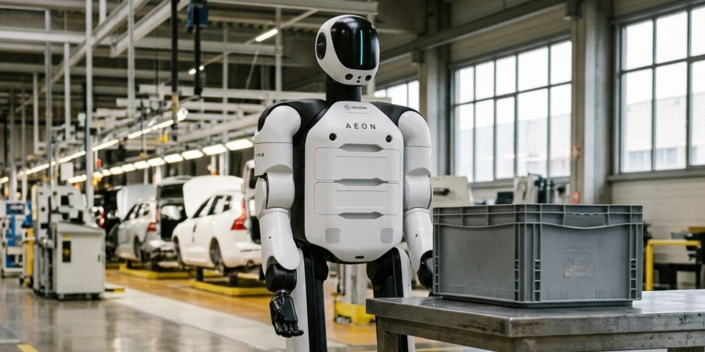

Geekotidien · Édition du 27 novembre 2026
Volvo teste AEON
Humanoïde à l'usine de Gand

Volvo teste le robot humanoïde AEON dans son usine belge de Gand, avec une mise en production progressive prévue à partir de mi-2027, selon Frandroid. Le robot, conçu par Hexagon Robotics (filiale du groupe suédois Hexagon), mesure 1,65 m, a une tête, deux bras et roule sur des roues.
Il ne peut soulever que 10 kg et roule jusqu'à 8,6 km/h. Il remplace lui-même sa batterie. D'autres robots arriveront début 2027, avant l'entrée progressive en production à mi-2027. Volvo ne dit pas combien de robots sont déjà sur place.
L'usine compte déjà près de 600 robots pour assembler l'EX30. BMW utilise le même AEON à Leipzig, avec un essai en décembre 2025, un pilote officialisé en février 2026, puis des tâches de production en juin 2026.
Volvo ne communique ni le coût, ni les gains de productivité, ni le nombre de robots prévus.
Le + : BMW utilise déjà ce robot à Leipzig depuis 2025.